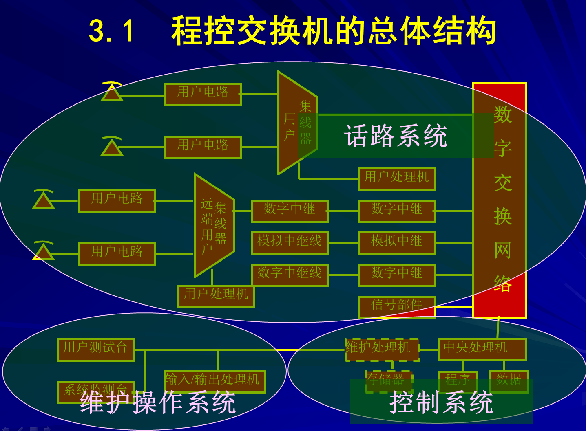
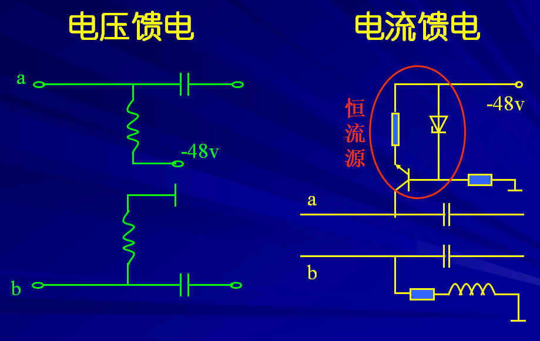
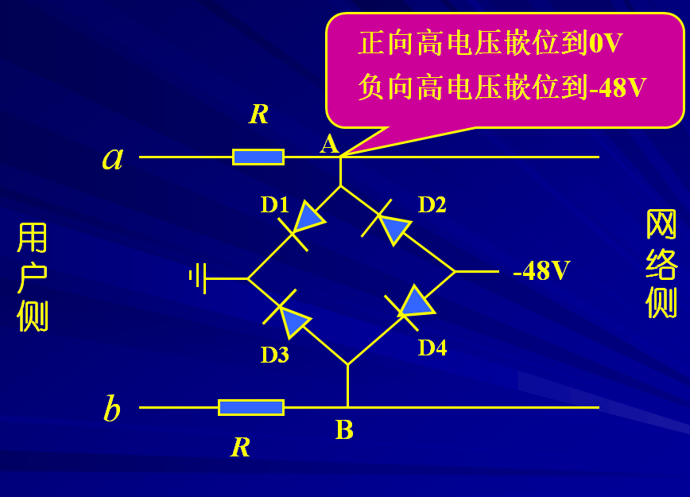
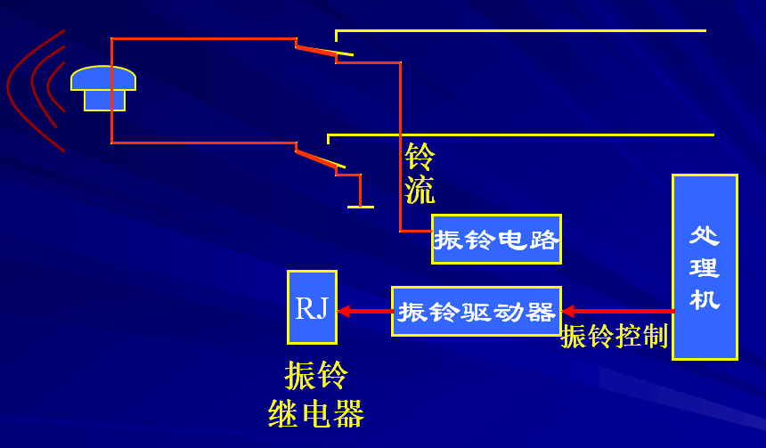
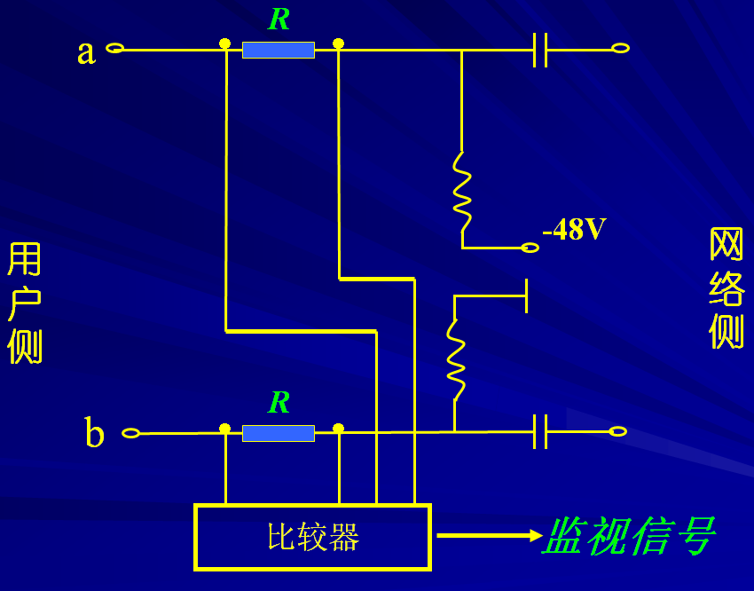
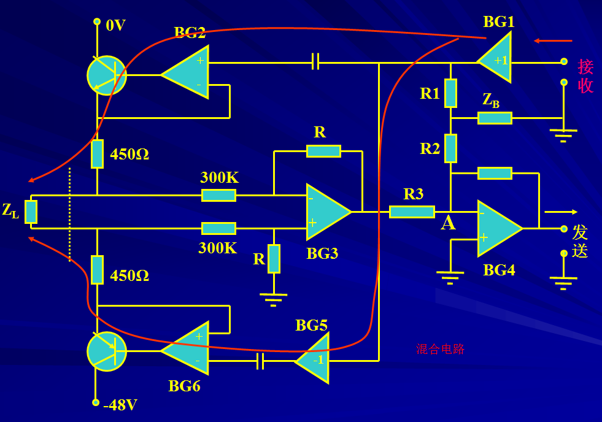

|  |  |  |
|  |  |  |
| 用户级话路 | 模拟用户电路 | B 馈电 |
| O 过压保护 | ||
| R 振铃控制 | ||
| S 监视 | ||
| C 编译码和滤波 | ||
| H 混合电路 | ||
| T 测试 | ||
| 中继器 | 模拟中继器 | |
| 数字中继器 | ||
| 信号部件 | 数字音频信号的产生(单双) | |
| 数字音频信号的发送 | ||
| 数字音频信号的接受(DTMF、MFC) |
| 处理机控制方式 | 集中控制方式 |
| 分散控制方式 | 话务容量分担和功能分担 |
| 静态分配和动态分配 | |
| 分级控制系统和分布式控制系统 | |
| 处理机的备用方式 | 同步双工工作方式 |
| 话务分担工作方式 | |
| 备用方式 | |
| 控制系统可用性 | 可用性（A）=MTBF）/(MTBF + MTTR） |